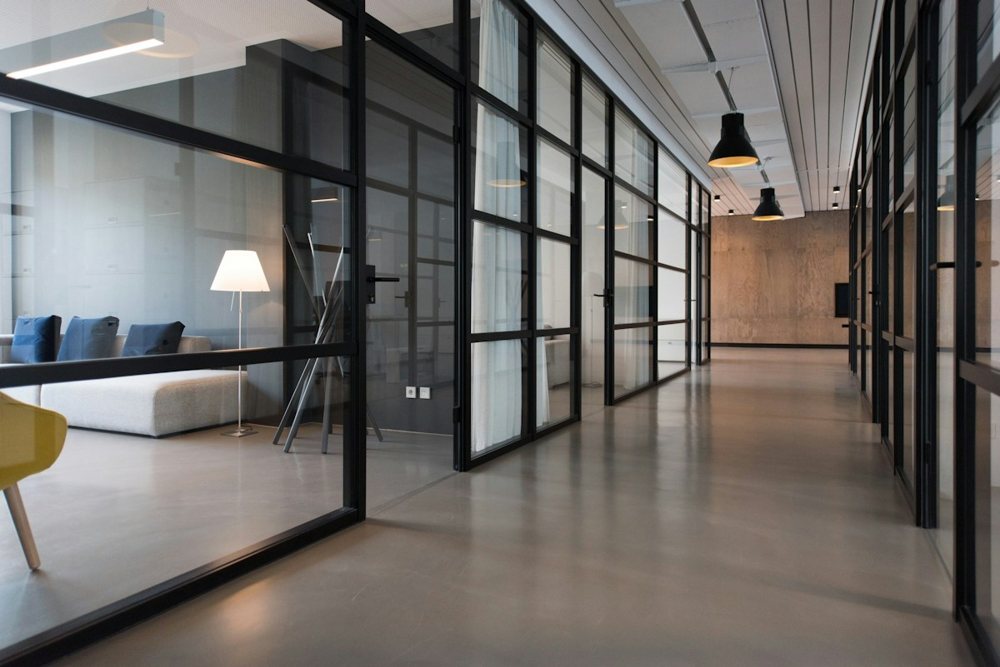
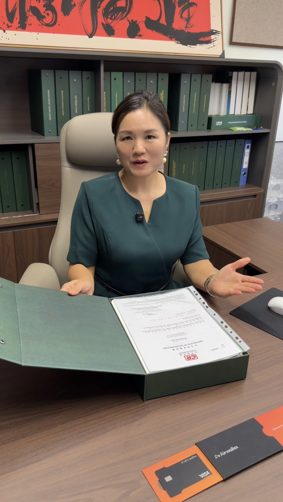
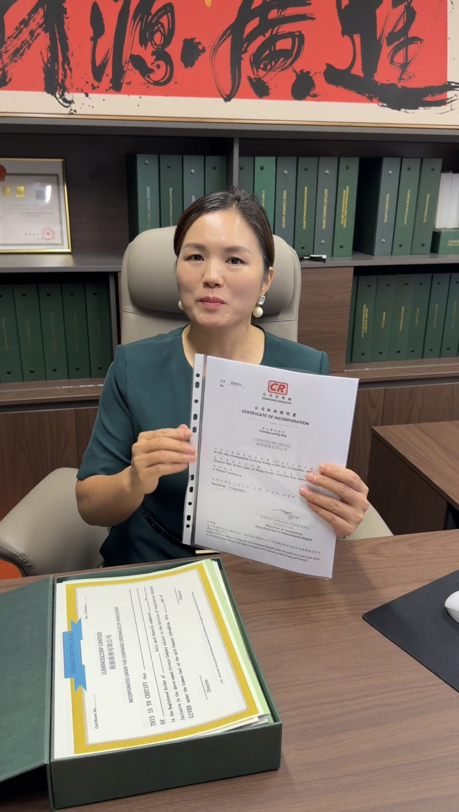
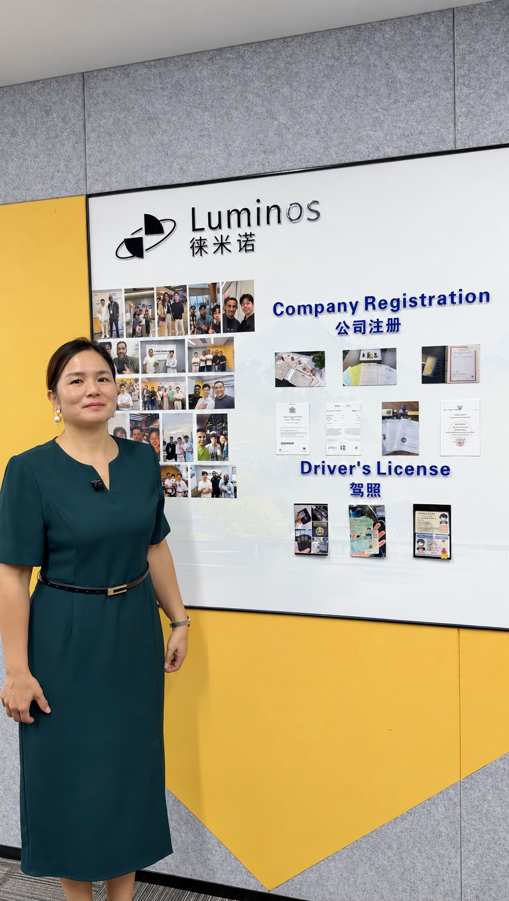

Une structure tournée vers l’international
Une société pour organiser vos contrats, vos clients et vos fournisseurs autour d’une même activité.
HONG KONG · CHINE · INTERNATIONAL
Vous avez l’ambition. Donnez-lui la bonne structure. Création de société, solutions bancaires et suivi annuel : Luminos vous accompagne pour passer à l’international.
DES SOLUTIONS POUR
VOTRE ACTIVITÉ INTERNATIONALE
UNE BASE POUR VOIR PLUS GRAND
Vous vendez en ligne, travaillez avec des clients à l’étranger ou achetez en Asie ? Votre structure doit suivre le rythme de votre activité.

Une société pour organiser vos contrats, vos clients et vos fournisseurs autour d’une même activité.
Rapprochez votre projet de vos partenaires commerciaux et de l’écosystème économique de la région.
Compte professionnel, devises et virements : nous vous aidons à préparer le dossier adapté à vos flux.
Activité, documents, obligations annuelles : vous avancez avec une vision claire de ce qu’il faut prévoir.
PENSÉ POUR VOTRE BUSINESS
Votre boutique grandit et vos clients sont dans plusieurs pays. Construisez une société cohérente avec votre modèle, vos fournisseurs et vos moyens d’encaissement.
L’ACCOMPAGNEMENT LUMINOS
Un parcours clair pour créer, organiser et suivre votre activité. Vous savez ce qui est pris en charge et quelle est la prochaine étape.
Nous vous accompagnons dans la constitution de votre société à Hong Kong et la préparation des documents qui fondent votre activité.
Nous préparons avec vous une demande de compte professionnel cohérente avec votre activité et les exigences de l’établissement.
Comprendre l’accompagnement ↗Retrouvez vos documents et suivez l’avancement de vos démarches depuis votre espace client.
Accéder à mon espace ↗Renouvellement, adresse et documents : anticipez les prochaines échéances avec notre offre annuelle.
Voir le suivi annuel ↗DU BUSINESS AUX TRANSACTIONS
Recevoir un règlement, payer un fournisseur, travailler dans plusieurs devises. Votre solution bancaire doit correspondre à la réalité de votre business.
Comprendre vos besoinsPays, devises, clients, fournisseurs et nature de l’activité.
Préparer un dossier solideDocuments de société, identité et justificatifs de votre activité.
Vous accompagner dans la demandeChoix de la solution et suivi des pièces demandées par l’établissement.
La décision d’ouverture, les fonctionnalités, les frais et un éventuel déplacement dépendent de l’établissement choisi.
Une structure. Des échanges internationaux.
DE L’IDÉE À LA SOCIÉTÉ
Vous apportez votre projet et vos documents. Nous vous guidons dans les démarches de création et la suite du parcours.
Votre activité, vos objectifs et vos besoins bancaires. On commence par poser les bonnes questions.
Identité, justificatif d’adresse et informations de société : nous précisons les éléments nécessaires.
Votre dossier est préparé et soumis. Vous suivez son avancement depuis votre espace client.
Vous récupérez vos documents. Nous poursuivons l’accompagnement bancaire et préparons le suivi annuel.
Le délai dépend de la complétude du dossier et des organismes concernés. L’ouverture du compte suit son propre calendrier.
Faire le point sur mon projet ↗VOTRE SOCIÉTÉ, CONCRÈTEMENT
Voici à quoi ressemble un dossier de société à Hong Kong, présenté dans nos bureaux.


CE QUE CONTIENT LE DOSSIER
Certificat de constitution, statuts et documents d’enregistrement : les pièces qui identifient votre société et organisent son fonctionnement.

À L’INTÉRIEUR DE LUMINOSUNE ÉQUIPE DERRIÈRE VOTRE PROJET
Une création de société soulève forcément des questions. Vous devez pouvoir les poser à quelqu’un qui connaît votre dossier.
Chez Luminos, le digital simplifie les démarches. L’accompagnement humain leur donne du sens : comprendre votre activité, vous aider à réunir les pièces et vous expliquer la suite.
LE PRINCIPE DU OFFSHORE
« Offshore » signifie littéralement « à l’étranger ». Dans le monde des affaires, on parle d’une société établie dans un territoire et dont l’activité se déroule en dehors de celui-ci.
Le principe territorial à Hong Kong ↗Votre entreprise est enregistrée à Hong Kong, tandis que vos opérations commerciales se déroulent à l’international : vente de produits, prestations de services ou échanges avec des partenaires étrangers.
Hong Kong applique une fiscalité territoriale : l’origine des bénéfices est au cœur du système. Les bénéfices commerciaux de source étrangère peuvent être exonérés de l’impôt hongkongais sur les bénéfices selon les règles de source applicables.
On regarde les opérations qui ont généré les bénéfices et le lieu où elles ont été réalisées. C’est ce lien entre activité internationale et principe territorial qui explique l’utilisation de Hong Kong pour les structures offshore.
LES OFFRES LUMINOS
La création et le renouvellement sont deux étapes distinctes. Retrouvez ici le périmètre de chaque offre.
Pour constituer votre société et préparer les premières démarches.
Pour organiser les démarches de renouvellement de votre société.
Un besoin de comptabilité, d’audit, de licence particulière ou de conseil fiscal ? Faisons le point sur le périmètre et les éventuels frais avant votre commande. Les frais des établissements bancaires dépendent de la solution retenue.
VOTRE PROCHAINE IMPLANTATION
Vous souhaitez créer une société en Chine continentale ? Le choix de la ville et de la structure se prépare à partir de votre activité.
Expliquez-nous ce que vous voulez développer, avec qui et où. Luminos vous accompagne pour cadrer la création et vous proposer un devis adapté.
Parlons de votre projet en Chine ↗LES RETOURS CLIENTS
Aperçu : témoignages repris de l’ancien site, authenticité à confirmer avant publication.
Processus d'une fluidité remarquable. Ma société Hong Kong était opérationnelle en moins de 72 heures. Le suivi via le dashboard est particulièrement rassurant.
Luminous m'a permis de structurer mon activité e-commerce internationale de façon professionnelle. L'équipe est réactive sur WhatsApp, même le weekend.
J'avais essayé d'autres prestataires avant. Luminous est dans une autre catégorie : professionnel, transparent, et le compte bancaire a été ouvert sans accroc.
VOS QUESTIONS, SIMPLEMENT
Un cas particulier ? Votre projet mérite une réponse adaptée.
Poser ma question ↗Les démarches de création de société peuvent être gérées à distance. Pour le compte professionnel, les conditions varient selon l’établissement : un entretien ou un déplacement peut être demandé.
Prévoyez une pièce d’identité valide, un justificatif de domicile récent et les informations sur l’activité et les personnes impliquées dans la société. Nous vous précisons la liste selon votre dossier. La banque peut demander des pièces supplémentaires.
Nous vous indiquons un calendrier après examen du dossier. Le délai dépend des pièces disponibles et du traitement par les organismes concernés. La création de la société et l’ouverture du compte sont deux démarches distinctes.
Nous vous aidons à préparer la demande et à répondre aux exigences de l’établissement. La décision finale lui appartient et dépend notamment de votre activité, de vos flux et des justificatifs fournis.
Les documents constitutifs de votre société, notamment le certificat de constitution et les statuts, sont mis à votre disposition. Votre espace client permet de retrouver les documents et de suivre votre dossier.
La société est enregistrée à Hong Kong et son activité se déroule à l’international. Hong Kong applique le principe territorial : la source des bénéfices est déterminée par les opérations qui les produisent et le lieu où elles sont réalisées.
Une société doit assurer son suivi administratif, ses renouvellements et ses obligations comptables et fiscales applicables. L’offre annuelle présente les prestations de renouvellement ; nous clarifions avec vous les besoins complémentaires.
Oui. Nous étudions votre activité, la ville envisagée et votre projet d’implantation afin de vous proposer un accompagnement sur devis.
ALLER PLUS LOIN
Comprendre les étapes et les pièces à réunir.
Lire le guide ↗02 / BANQUEAnticiper les questions et construire votre dossier.
Lire le guide ↗03 / STRUCTUREComprendre l’activité internationale et le principe territorial.
Comprendre les bases ↗VOTRE PROCHAINE ÉTAPE
Parlez-nous de votre activité et de ce que vous voulez construire. On commence par votre projet, puis on définit la suite.
Échanger directement sur WhatsApp ↗